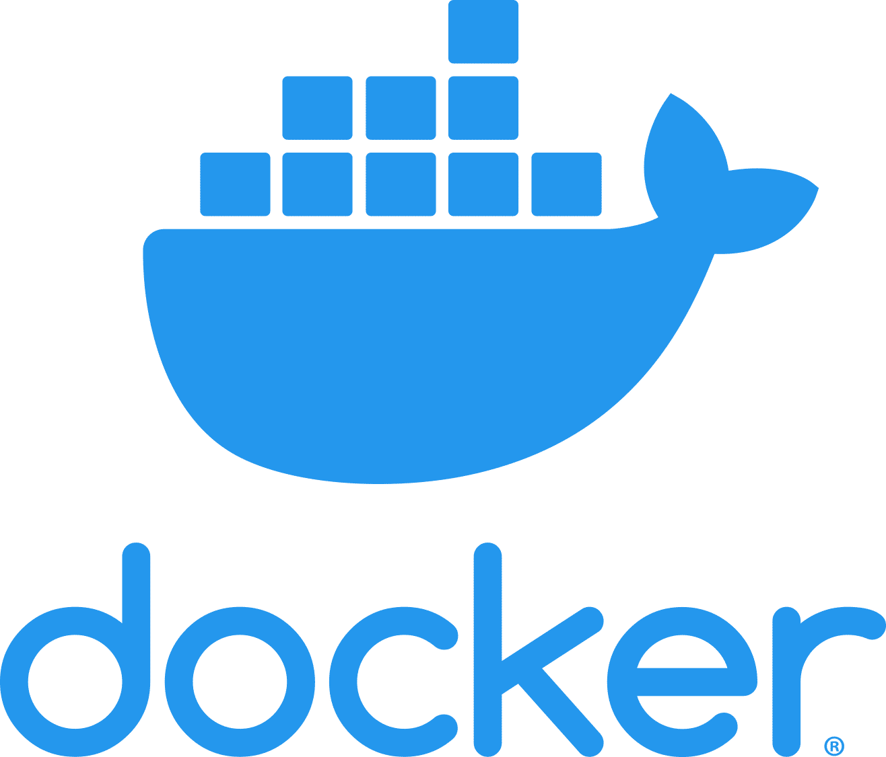
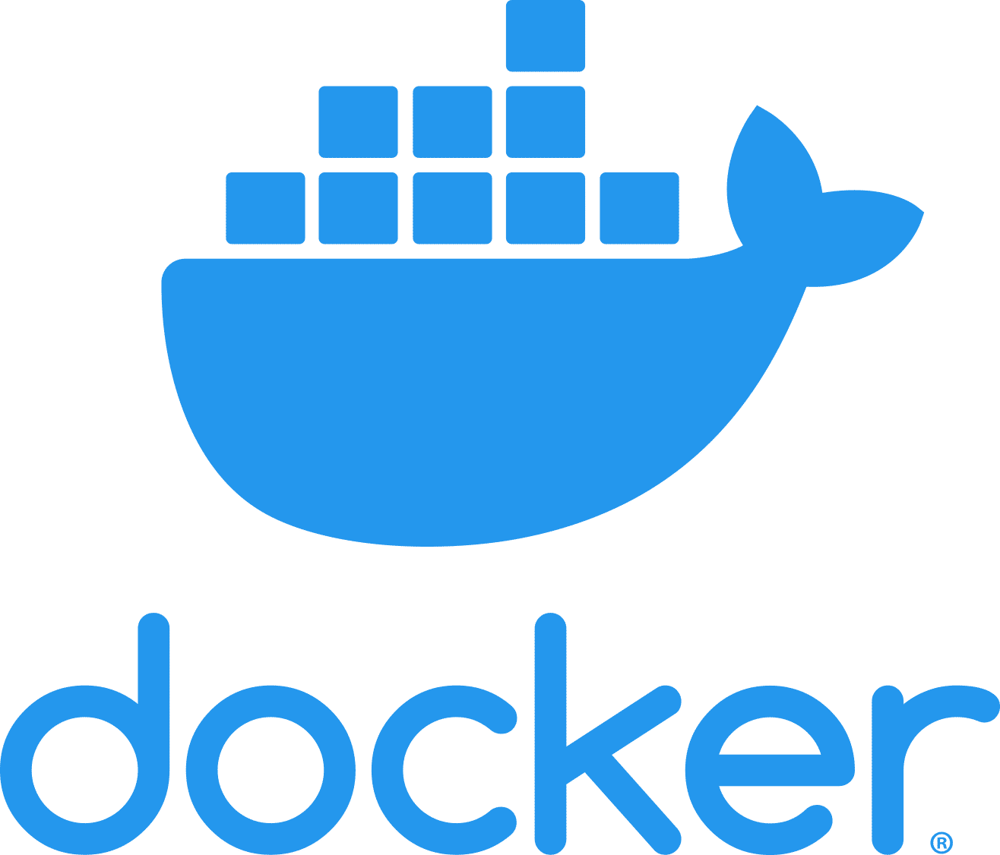

A bit about me
I am Naga Venkata Sairam Yanamadala, a highly skilled Full-Stack Developer with over 7 years of hands-on experience in designing and implementing scalable web applications using a wide array of technologies. With a strong foundation in Java/J2EE technologies and proficiency in modern JavaScript frameworks like React, Angular, and Vue.js, I have consistently delivered innovative, user-centric solutions. My expertise extends to backend services, where I have developed efficient RESTful APIs, integrated GraphQL for flexible data querying, and employed robust event-driven architectures with Apache Kafka to ensure real-time data processing. My extensive experience with cloud services, including AWS and GCP, highlights my ability to deploy scalable infrastructure and leverage cloud-native tools for optimized performance and security.
I am well-versed in a comprehensive range of programming languages, frameworks, databases, and cloud technologies. I have proficiency in Java versions 8, 11, and 17, and expertise in SQL, PL/SQL, Python, PHP, and several other programming languages. My backend expertise includes extensive use of Spring Boot, Spring MVC, Spring Security, Spring Data, Hibernate, and more, ensuring robust and scalable application architectures. On the frontend, I have developed dynamic user interfaces with React.js, Angular, Vue.js, and employed CSS frameworks like Bootstrap and Tailwind CSS to create responsive and accessible designs.
My professional journey includes significant contributions to renowned organizations such as Rx Savings Solutions, Kroger, First United Bank, and Tachasoft Pvt Ltd. At Rx Savings Solutions, I developed an innovative prescription savings platform, enhancing user experience through real-time updates and efficient data processing. At Kroger, I engineered a full-stack Java application for bill payment services, utilizing Spring Boot for microservices and AWS for cloud deployment. My tenure at First United Bank involved the development of a Java-based web application for investment management, integrating Vue.js on the frontend and Spring Boot on the backend. During my time at Tachasoft Pvt Ltd, I designed a comprehensive bus ticket booking application, ensuring secure transactions and efficient performance.
My commitment to continuous integration and delivery is evident in my adept use of tools like Jenkins, Maven, Docker, and Terraform. I have implemented rigorous testing practices using JUnit, Selenium, and Mockito to maintain high code quality and reliability. My experience with configuration management tools such as Git, GitHub, BitBucket, and SVN has enabled seamless collaboration and code management across diverse teams. My dedication to security is showcased through my implementation of OAuth and JWT authentication with Spring Security, ensuring robust protection of user data.
I hold a Master’s in Computer Science from the University of Missouri Kansas City and a Bachelor of Technology in Computer Science and Engineering from JNT University, Kakindada. My academic background, coupled with my extensive professional experience, positions me as a versatile and innovative developer capable of tackling complex technical challenges and delivering exceptional software solutions.


 



 <
<